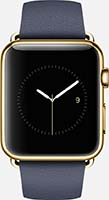
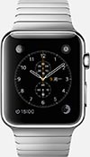

它，终于来了
为了充分发挥体积小巧以及佩戴手腕的优势，AppleWatch带来了全新的科技和互动方式。它可以让你更快速便捷地未完成一些早已习惯的事，可以实现过去根本无法企及的新功能，因此这将会是焕然一新的使用体验，也将实现与你前所未有的贴近。
进一步了解
非同一般的精准计时
高级手表向来以精准为本，Apple Watch更是如此，它与你的iPhone配合使用，同全球标准时间的误差不超过50毫秒。而且，你可以对表盘进行个性化设定，以更具个性和意义的方式显示时间，使其更贴近你的生活和日程需要。
进一步了解计时
在三个特点鲜明的系列中找到你的风格

不锈钢或深空黑色不锈钢表壳，蓝宝色水晶镜面，搭配多款时尚表带
了解更多
不锈钢或深空黑色不锈钢表壳，蓝宝色水晶镜面，搭配多款时尚表带
了解更多

不锈钢或深空黑色不锈钢表壳，蓝宝色水晶镜面，搭配多款时尚表带
了解更多